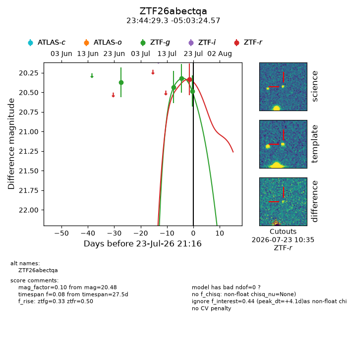
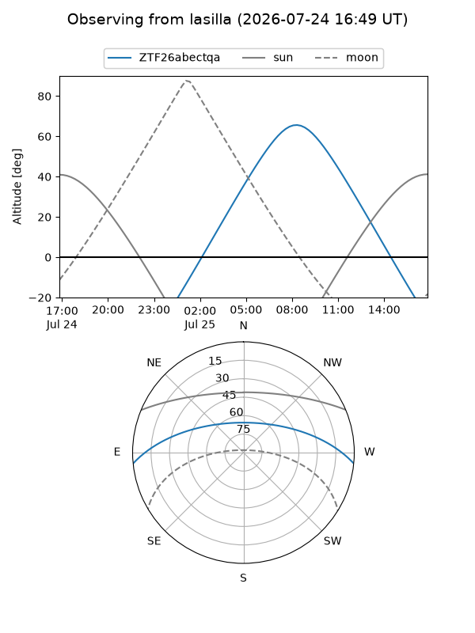
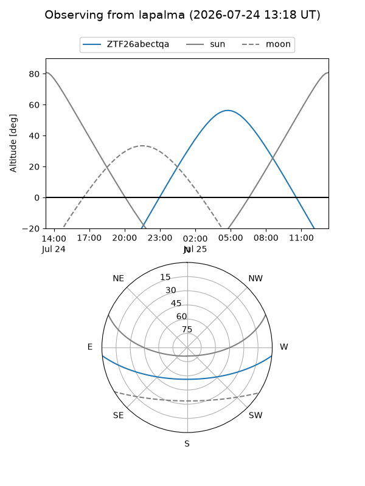
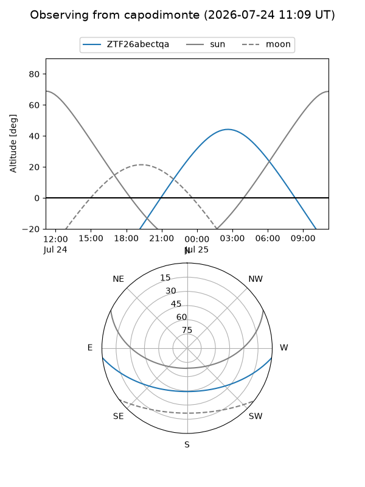
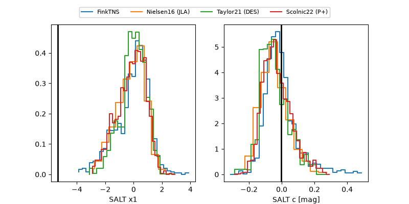

ZTF26abectqa
Target ZTF26abectqa at 2026-07-23 21:19
Aliases and brokers:
FINK-ZTF: ztf.fink-portal.org/ZTF26abectqa
Lasair-ZTF: lasair-ztf.lsst.ac.uk/objects/ZTF26abectqa
ALeRCE-ZTF: alerce.online/object/ZTF26abectqa
Direct TNS query: direct search
alt names
ZTF26abectqa (ztf,fink_ztf)
Coordinates:
equatorial (ra, dec) = 356.1219,-5.05682
equatorial (HMS+DMS) = 23:44:29.26,-05:03:24.57
galactic (l, b) = (84.1106,-62.76757)
Flags:
peak dt: +4.1
Photometry:
last ztfg=20.48, ztfr=20.34
4 ztfg, 1 ztfr detections
Lightcurve

Visibility



Additional plots
